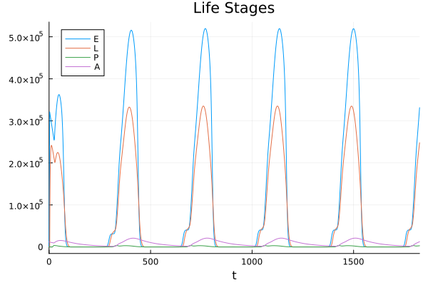
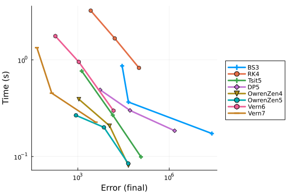
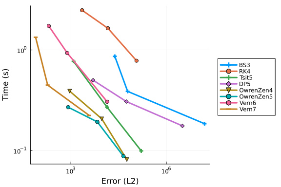
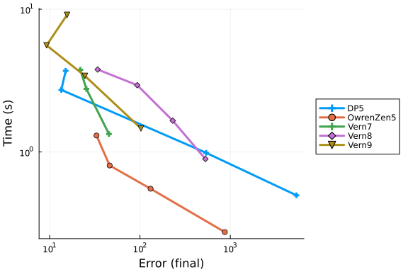
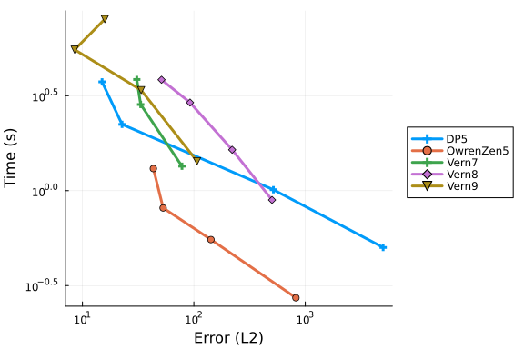

Mosquito Population State-Dependent DDE Work-Precision Diagrams
Mosquito Population State-Dependent Delay Differential Equation
This benchmark implements the Ewing model for mosquito population dynamics using state-dependent delay differential equations (DDEs). The model tracks mosquito life stages (eggs, larvae, pupae, adults) with temperature-dependent development rates and delays. This is a complex ecological model with multiple state-dependent delays that presents challenges for numerical solvers.
using DelayDiffEq, DiffEqDevTools, Plots
using LabelledArrays, StaticArrays
gr()
# Predation parameters
pupae_pars = (a=1, h=0.002, r=0.001, V=200)
p0 = pupae_pars.r / pupae_pars.h
p1 = pupae_pars.V / (pupae_pars.a * pupae_pars.h)
# Parameter vector definition
parvec = @SLVector (
# temp
:phi, # PHASE
:lambda, # A
:mu, # M
:gamma, # POWER
# photoperiod
:L, # latitude
# oviposition
:max_egg, # max egg raft size, R
# gonotrophic cycle
:q1, # KG
:q2, # QG
:q3, # BG
# egg death
:nu_0E, # U3
:nu_1E, # U4
:nu_2E, # U5
# larvae death
:nu_0L, # U3
:nu_1L, # U4
:nu_2L, # U5
# pupae death
:nu_0P, # U3
:nu_1P, # U4
:nu_2P, # U5
# adult death
:alpha_A, # ALPHA
:beta_A, # BETA
# egg maturation
:alpha_E, # ALPHA
:beta_E, # BETA
# larvae maturation
:alpha_L, # ALPHA
:beta_L, # BETA
# pupae maturation
:alpha_P, # ALPHA
:beta_P, # BETA
# predation on pupae
:p0,
:p1
)
# Parameter values
parameters = parvec(
1.4, # phi
6.3, # lambda
10.3, # mu
1.21, # gamma
51, # L
200, # max_egg
# gonotrophic cycle
0.2024, # (q1) KG
74.48, # (q2) QG
0.2456, # (q3) BG
# egg death
0.0157, # (nu_0E) U3
20.5, # (nu_1E) U4
7, # (nu_2E) U5
# larvae death
0.0157, # (nu_0L) U3
20.5, # (nu_1L) U4
7, # (nu_2L) U5
# pupae death
0.0157, # (nu_0P) U3
20.5, # (nu_1P) U4
7, # (nu_2P) U5
# adult death
2.166e-8, # (alpha_A) ALPHA
4.483, # (beta_A) BETA
# egg maturation
0.0022, # (alpha_E) ALPHA
1.77, # (beta_E) BETA
# larvae maturation
0.00315, # (alpha_L) ALPHA
1.12, # (beta_L) BETA
# pupae maturation
0.0007109, # (alpha_P) ALPHA
1.8865648, # (beta_P) BETA
# predation on pupae
p0, # p0
p1 # p1
)
# Maximum allowed values for rates (same as FORTRAN)
death_max = 1.0 # 1.0
death_min_a = 0.01 # 0.01
gon_min = 0.0333 # 0.0333
maturation_min = 0.016667 # 0.016667
# Temperature as modified cosine function
function temperature(t, pars)
phi = pars.phi # PHASE
lambda = pars.lambda # A
mu = pars.mu # M
gamma = pars.gamma # POWER
temp = 0.0
if t < 0.0
temp = (mu - lambda) + lambda * 2.0 * (0.5 * (1.0 + cos(2.0 * pi * (0.0 - phi) / 365.0)))^gamma
else
temp = (mu - lambda) + lambda * 2.0 * (0.5 * (1.0 + cos(2.0 * pi * (t - phi) / 365.0)))^gamma
end
return temp
end
# Photoperiod
function daylight(t, pars)
L = pars.L # latitude (51 in thesis)
# define photoperiod values
EPS = asin(0.39795 * cos(0.2163108 + 2 * atan(0.9671396 * tan(0.00860 * (t - 3.5)))))
NUM = sin(0.8333 * pi/ 180.0) + (sin(L * pi / 180.0) * sin(EPS))
DEN = cos(L * pi / 180.0) * cos(EPS)
DAYLIGHT = 24.0 - (24.0 / pi) * acos(NUM / DEN)
return DAYLIGHT
end
# Diapause functions
# pp: photoperiod
function diapause_spring(pp)
1.0 / (1.0 + exp(5.0 * (14.0 - pp)))
end
function diapause_autumn(pp)
1.0 / (1.0 + exp(5.0 * (13.0 - pp)))
end
# Per-capita oviposition rate
# d: diapause
# G: duration of gonotrophic cycle
# pars: parameters
function oviposition(d, G, pars)
max_egg = pars.max_egg
egg_raft = d * max_egg * 0.5
ovi = egg_raft / G
return ovi
end
# Egg mortality
function death_egg_rate(temp, pars)
nu_0E = pars.nu_0E # U3
nu_1E = pars.nu_1E # U4
nu_2E = pars.nu_2E # U5
# calculate egg death rate
egg_d = nu_0E * exp(((temp - nu_1E) / nu_2E)^2)
if egg_d > death_max
egg_d = death_max
end
return egg_d
end
# Larvae mortality
function death_larvae_rate(temp, pars)
nu_0L = pars.nu_0L # U3
nu_1L = pars.nu_1L # U4
nu_2L = pars.nu_2L # U5
# calculate larvae death rate
larvae_d = nu_0L * exp(((temp - nu_1L) / nu_2L)^2)
if larvae_d > death_max
larvae_d = death_max
end
return larvae_d
end
# Pupal mortality
function death_pupae_rate(temp, pars)
nu_0P = pars.nu_0P # U3
nu_1P = pars.nu_1P # U4
nu_2P = pars.nu_2P # U5
# calculate pupae death rate
pupal_d = nu_0P * exp(((temp - nu_1P)/nu_2P)^2)
if pupal_d > death_max
pupal_d = death_max
end
return pupal_d
end
# Adult mortality
function death_adult_rate(temp, pars)
alpha_A = pars.alpha_A # ALPHA
beta_A = pars.beta_A # BETA
# calculate adult death rate
adult_d = alpha_A * (temp^beta_A)
if adult_d < death_min_a
adult_d = death_min_a
end
return adult_d
end
# G: duration of gonotrophic cycle
function gonotrophic(temp, pars)
q1 = pars.q1 # KG
q2 = pars.q2 # QG
q3 = pars.q3 # BG
# calculate gonotrophic cycle length
if temp < 0.0
grate = 0.0333
else
grate = q1 / (1 + q2*exp(-q3*temp))
end
if grate < gon_min
grate = gon_min
end
return 1.0 / grate
end
# g_E
function egg_maturation_rate(temp, pars)
alpha_E = pars.alpha_E # ALPHA
beta_E = pars.beta_E # BETA
# calculate egg development rate
if temp < 0.0
egg_maturation = 0.016667
else
egg_maturation = alpha_E * (temp^beta_E)
end
if egg_maturation < maturation_min
egg_maturation = maturation_min
end
return egg_maturation
end
# g_L
function larvae_maturation_rate(temp, pars)
alpha_L = pars.alpha_L # ALPHA
beta_L = pars.beta_L # BETA
# calculate larvae development rate
if temp < 0.0
larvae_maturation = 0.016667
else
larvae_maturation = alpha_L * (temp^beta_L)
end
if larvae_maturation < maturation_min
larvae_maturation = maturation_min
end
return larvae_maturation
end
# g_P
function pupae_maturation_rate(temp, pars)
alpha_P = pars.alpha_P # ALPHA
beta_P = pars.beta_P # BETA
# calculate pupae development rate
if temp < 0.0
pupae_maturation = 0.016667
else
pupae_maturation = alpha_P * (temp^beta_P)
end
if pupae_maturation < maturation_min
pupae_maturation = maturation_min
end
return pupae_maturation
end
# State variable history
function h(p, t; idxs = nothing)
temp = temperature(t, p)
# history vector
Y = zeros(13)
Y[8] = 1.0 / egg_maturation_rate(temp, p) # tau_E
Y[9] = 1.0 / larvae_maturation_rate(temp, p) # tau_L
Y[10] = 1.0 / pupae_maturation_rate(temp, p) # tau_P
Y[5] = exp(-death_egg_rate(temp, p) * Y[8]) # S_E
Y[6] = exp(-death_larvae_rate(temp, p) * Y[9]) # S_L
Y[7] = exp(-death_pupae_rate(temp, p) * Y[10]) #S_P
temp_L = temperature(t - Y[9], p)
temp_P = temperature(t - Y[10], p)
Y[11] = 1.0 / egg_maturation_rate(temp_L, p) # tau_E(t - tau_L(t))
Y[12] = 1.0 / larvae_maturation_rate(temp_P, p) # tau_L(t - tau_P(t))
temp_LP = temperature(t - Y[10] - Y[12], p)
Y[13] = 1.0 / egg_maturation_rate(temp_LP, p) # tau_E(t - tau_P(t) - tau_L(t - tau_P(t)))
idxs === nothing ? Y : Y[idxs]
end
# Initial condition calculation
# A0: A(0)
# t0: temp(0); assumed constant for t<0
function calculate_IC(A0, t0, pars)
u0 = zeros(13)
u0[4] = A0
# calculate initial lags first
u0[8] = 1.0 / egg_maturation_rate(t0, pars) # tau_E
u0[9] = 1.0 / larvae_maturation_rate(t0, pars) # tau_L
u0[10] = 1.0 / pupae_maturation_rate(t0, pars) # tau_P
u0[11] = u0[8] # tau_E(t - tau_L(t))
u0[12] = u0[9] # tau_L(t - tau_P(t))
u0[13] = u0[8] # tau_E(t - tau_P(t) - tau_L(t - tau_P(t)))
# survival probabilities
u0[5] = exp(-u0[8] * death_egg_rate(t0, pars)) # S_E
u0[6] = exp(-u0[9] * death_larvae_rate(t0, pars)) # S_L
u0[7] = exp(-u0[10] * death_pupae_rate(t0, pars)) # S_P
return u0
end
# System of DDEs
# 13 equations
# 6 delays
# DDEs
function ewing_dde(du, u, h, p, t)
# state variables
E = u[1]
LAR = u[2]
PUP = u[3]
ADU = u[4]
SE = u[5]
SL = u[6]
SP = u[7]
DE = u[8] # tau_E(t)
DL = u[9] # tau_L(t)
DP = u[10] # tau_P(t)
DEL = u[11] # tau_E(t - tau_L(t))
DLP = u[12] # tau_L(t - tau_P(t))
DELP = u[13] # tau_E(t - tau_P(t) - tau_L(t - taup_P(t)))
# larval predation parameters
p0 = p.p0
p1 = p.p1
# Z: state variables at each of the 6 lagged times (lags follow same order as Z/BETA in DDE_SOLVER)
# Z
Z1 = h(p, t - DE; idxs = 4) # Z(x,1): t - tau_E(t)
Z2 = h(p, t - DL - DEL; idxs = 4) # Z(x,2): t - tau_L(t) - tau_E(t - tau_L(t))
Z3 = h(p, t - DP - DLP - DELP; idxs = 4) # Z(x,3): t - tau_P(t) - tau_L(t - tau_P(t)) - tau_E(t - tau_P(t) - tau_L(t - tau_P(t)))
Z4 = h(p, t - DL) # Z(x,4): t - tau_L(t)
Z5 = h(p, t - DP - DLP) # Z(x,5): t - tau_P(t) - tau_L(t - tau_P(t))
Z6 = h(p, t - DP) # Z(x,6): t - tau_P(t)
# (lagged) temperature
temp = temperature(t, p)
temp_E = temperature(t - DE, p)
temp_L = temperature(t - DL, p)
temp_P = temperature(t - DP, p)
temp_EL = temperature(t - DL - Z4[8], p)
temp_ELP = temperature(t - DP - Z6[9] - Z5[8], p)
temp_LP = temperature(t - DP - Z6[9], p)
# (lagged) photoperiod
pp = daylight(t, p)
pp_1 = daylight(t - 1, p)
pp_E = daylight(t - DE, p)
pp_EL = daylight(t - DL - Z4[8], p)
pp_ELP = daylight(t - DP - Z6[9] - Z5[8], p)
# (lagged) gonotrophic cycle
gon = gonotrophic(temp, p)
gon_E = gonotrophic(temp_E, p)
gon_EL = gonotrophic(temp_EL, p)
gon_ELP = gonotrophic(temp_ELP, p)
# diapause and birth
if pp > pp_1
dia = diapause_spring(pp)
dia_E = diapause_spring(pp_E)
dia_EL = diapause_spring(pp_EL)
dia_ELP = diapause_spring(pp_ELP)
else
dia = diapause_autumn(pp)
dia_E = diapause_autumn(pp_E)
dia_EL = diapause_autumn(pp_EL)
dia_ELP = diapause_autumn(pp_ELP)
end
birth = oviposition(dia, gon, p)
birth_E = oviposition(dia_E, gon_E, p)
birth_EL = oviposition(dia_EL, gon_EL, p)
birth_ELP = oviposition(dia_ELP, gon_ELP, p)
# (lagged) death
death_egg = death_egg_rate(temp, p)
death_egg_E = death_egg_rate(temp_E, p)
death_larvae = death_larvae_rate(temp, p)
death_larvae_L = death_larvae_rate(temp_L, p)
death_pupae = death_pupae_rate(temp, p)
death_pupae_P = death_pupae_rate(temp_P, p)
death_adult = death_adult_rate(temp, p)
# (lagged) development
larvae_maturation = larvae_maturation_rate(temp, p)
larvae_maturation_L = larvae_maturation_rate(temp_L, p)
larvae_maturation_P = larvae_maturation_rate(temp_P, p)
larvae_maturation_LP = larvae_maturation_rate(temp_LP, p)
egg_maturation = egg_maturation_rate(temp, p)
egg_maturation_E = egg_maturation_rate(temp_E, p)
egg_maturation_L = egg_maturation_rate(temp_L, p)
egg_maturation_EL = egg_maturation_rate(temp_EL, p)
egg_maturation_LP = egg_maturation_rate(temp_LP, p)
egg_maturation_ELP = egg_maturation_rate(temp_ELP, p)
pupae_maturation = pupae_maturation_rate(temp, p)
pupae_maturation_P = pupae_maturation_rate(temp_P, p)
# DDEs describing change in state duration
dDEdt = 1 - egg_maturation/egg_maturation_E
dDLdt = 1 - larvae_maturation/larvae_maturation_L
dDPdt = 1 - pupae_maturation/pupae_maturation_P
dDELdt = (1 - dDLdt) * (1 - egg_maturation_L/egg_maturation_EL)
dDLPdt = (1 - dDPdt) * (1 - larvae_maturation_P/larvae_maturation_LP)
dDELPdt = (1 - dDPdt - dDLPdt) * (1 - egg_maturation_LP/egg_maturation_ELP)
# stage recruitment
R_E = birth * ADU
R_L = birth_E * Z1 * SE * egg_maturation/egg_maturation_E
R_P = birth_EL * Z2 * Z4[5] * SL * larvae_maturation/larvae_maturation_L * (1 - dDELdt)
R_A = birth_ELP * Z3 * Z5[5] * Z6[6] * SP * pupae_maturation/pupae_maturation_P * (1 - dDLPdt) * (1 - dDELPdt)
# maturation rates
M_E = R_L
M_L = R_P
M_P = R_A
# death rates
D_E = death_egg * E
D_L = ((p0*LAR/(p1+LAR)) + death_larvae) * LAR
D_P = death_pupae * PUP
D_A = death_adult * ADU
# DDE system
du_1 = R_E - M_E - D_E # E
du_2 = R_L - M_L - D_L # L
du_3 = R_P - M_P - D_P # P
du_4 = R_A - D_A # A
du_5 = SE * ((egg_maturation * death_egg_E / egg_maturation_E) - death_egg)
du_6 = SL * (((p0*Z4[2] / (p1+Z4[2])) + death_larvae_L) * (1-dDLdt) - (p0*LAR / (p1+LAR)) - death_larvae)
du_7 = SP * ((pupae_maturation * death_pupae_P / pupae_maturation_P) - death_pupae)
du_8 = dDEdt # tau_E(t)
du_9 = dDLdt # tau_L(t)
du_10 = dDPdt # tau_P(t)
du_11 = dDELdt # tau_E(t - tau_L(t))
du_12 = dDLPdt # tau_L(t - tau_P(t))
du_13 = dDELPdt # tau_E(t - tau_P(t) - tau_L(t - tau_P(t)))
du[1] = du_1
du[2] = du_2
du[3] = du_3
du[4] = du_4
du[5] = du_5
du[6] = du_6
du[7] = du_7
du[8] = du_8
du[9] = du_9
du[10] = du_10
du[11] = du_11
du[12] = du_12
du[13] = du_13
end
# Dependent lag functions
deplag_1(u, p, t) = u[8] # t - tau_E(t)
deplag_2(u, p, t) = u[9] + u[11] # t - tau_L(t) - tau_E(t - tau_L(t))
deplag_3(u, p, t) = u[10] + u[12] + u[13] # t - tau_P(t) - tau_L(t - tau_P(t)) - tau_E(t - tau_P(t) - tau_L(t - tau_P(t)))
deplag_4(u, p, t) = u[9] # t - tau_L(t)
deplag_5(u, p, t) = u[10] + u[12] # t - tau_P(t) - tau_L(t - tau_P(t))
deplag_6(u, p, t) = u[10] # t - tau_P(t)
# Simulation setup
A0 = 12000.0
t0 = 0.0
temp0 = temperature(t0, parameters)
u0 = calculate_IC(A0, temp0, parameters)
t0 = 0.0
times = (t0, t0 + 365.0 * 5) # 2 year simulation for benchmarking
prob = DDEProblem{true}(ewing_dde, u0, h, times, parameters;
dependent_lags = (deplag_1, deplag_2, deplag_3, deplag_4, deplag_5, deplag_6))
# Reference solution
sol = solve(prob, MethodOfSteps(Vern9());
reltol=1e-12, abstol=1e-12, maxiters=Int(1e7))
test_sol = TestSolution(sol)
# Plot the reference solution - life stages
plot(sol, vars = [1,2,3,4], title="Life Stages",
legend=:topleft, labels=["E" "L" "P" "A"])
Work-Precision Diagrams
Explicit RK Methods at High Tolerances
We test various explicit Runge-Kutta methods suitable for non-stiff problems with state-dependent delays.
abstols = 1.0 ./ 10.0 .^ (8:10)
reltols = 1.0 ./ 10.0 .^ (5:7)
setups = [Dict(:alg=>MethodOfSteps(BS3())),
Dict(:alg=>MethodOfSteps(RK4())),
Dict(:alg=>MethodOfSteps(Tsit5())),
Dict(:alg=>MethodOfSteps(DP5())),
Dict(:alg=>MethodOfSteps(OwrenZen4())),
Dict(:alg=>MethodOfSteps(OwrenZen5())),
Dict(:alg=>MethodOfSteps(Vern6())),
Dict(:alg=>MethodOfSteps(Vern7()))]
wp = WorkPrecisionSet(prob, abstols, reltols, setups;
appxsol=test_sol, maxiters=Int(1e5), error_estimate=:final)
plot(wp)
Interpolation Error
We also examine the interpolation errors which are important for accurate delay evaluation:
wp = WorkPrecisionSet(prob, abstols, reltols, setups;
appxsol=test_sol, maxiters=Int(1e5), error_estimate=:L2)
plot(wp)
Low Tolerances
Testing at more stringent tolerances:
abstols = 1.0 ./ 10.0 .^ (10:13)
reltols = 1.0 ./ 10.0 .^ (7:10)
setups = [Dict(:alg=>MethodOfSteps(DP5())),
Dict(:alg=>MethodOfSteps(OwrenZen5())),
Dict(:alg=>MethodOfSteps(Vern7())),
Dict(:alg=>MethodOfSteps(Vern8())),
Dict(:alg=>MethodOfSteps(Vern9()))]
wp = WorkPrecisionSet(prob, abstols, reltols, setups;
appxsol=test_sol, maxiters=Int(1e6), error_estimate=:final)
plot(wp)
wp = WorkPrecisionSet(prob, abstols, reltols, setups;
appxsol=test_sol, maxiters=Int(1e6), error_estimate=:L2)
plot(wp)
Appendix
These benchmarks are a part of the SciMLBenchmarks.jl repository, found at: https://github.com/SciML/SciMLBenchmarks.jl. For more information on high-performance scientific machine learning, check out the SciML Open Source Software Organization https://sciml.ai.
To locally run this benchmark, do the following commands:
using SciMLBenchmarks
SciMLBenchmarks.weave_file("benchmarks/NonStiffDDE","Mosquito_wpd.jmd")Computer Information:
Julia Version 1.10.10
Commit 95f30e51f41 (2025-06-27 09:51 UTC)
Build Info:
Official https://julialang.org/ release
Platform Info:
OS: Linux (x86_64-linux-gnu)
CPU: 128 × AMD EPYC 7502 32-Core Processor
WORD_SIZE: 64
LIBM: libopenlibm
LLVM: libLLVM-15.0.7 (ORCJIT, znver2)
Threads: 1 default, 0 interactive, 1 GC (on 128 virtual cores)
Environment:
JULIA_CPU_THREADS = 128
JULIA_DEPOT_PATH = /cache/julia-buildkite-plugin/depots/5b300254-1738-4989-ae0a-f4d2d937f953
Package Information:
Status `/cache/build/exclusive-amdci1-0/julialang/scimlbenchmarks-dot-jl/benchmarks/NonStiffDDE/Project.toml`
[f42792ee] DDEProblemLibrary v0.1.2
[bcd4f6db] DelayDiffEq v5.53.1
[f3b72e0c] DiffEqDevTools v2.48.0
[2ee39098] LabelledArrays v1.16.1
[91a5bcdd] Plots v1.40.16
[31c91b34] SciMLBenchmarks v0.1.3
[90137ffa] StaticArrays v1.9.13And the full manifest:
Status `/cache/build/exclusive-amdci1-0/julialang/scimlbenchmarks-dot-jl/benchmarks/NonStiffDDE/Manifest.toml`
[47edcb42] ADTypes v1.15.0
[7d9f7c33] Accessors v0.1.42
[79e6a3ab] Adapt v4.3.0
[66dad0bd] AliasTables v1.1.3
[4fba245c] ArrayInterface v7.19.0
[4c555306] ArrayLayouts v1.11.1
[d1d4a3ce] BitFlags v0.1.9
[62783981] BitTwiddlingConvenienceFunctions v0.1.6
[70df07ce] BracketingNonlinearSolve v1.3.0
[2a0fbf3d] CPUSummary v0.2.6
[d360d2e6] ChainRulesCore v1.25.2
[fb6a15b2] CloseOpenIntervals v0.1.13
[944b1d66] CodecZlib v0.7.8
[35d6a980] ColorSchemes v3.30.0
[3da002f7] ColorTypes v0.12.1
[c3611d14] ColorVectorSpace v0.11.0
[5ae59095] Colors v0.13.1
[38540f10] CommonSolve v0.2.4
[bbf7d656] CommonSubexpressions v0.3.1
[f70d9fcc] CommonWorldInvalidations v1.0.0
[34da2185] Compat v4.17.0
[a33af91c] CompositionsBase v0.1.2
[2569d6c7] ConcreteStructs v0.2.3
[f0e56b4a] ConcurrentUtilities v2.5.0
[8f4d0f93] Conda v1.10.2
[187b0558] ConstructionBase v1.6.0
[d38c429a] Contour v0.6.3
[adafc99b] CpuId v0.3.1
[a8cc5b0e] Crayons v4.1.1
[f42792ee] DDEProblemLibrary v0.1.2
[9a962f9c] DataAPI v1.16.0
[864edb3b] DataStructures v0.18.22
[e2d170a0] DataValueInterfaces v1.0.0
[bcd4f6db] DelayDiffEq v5.53.1
[8bb1440f] DelimitedFiles v1.9.1
[2b5f629d] DiffEqBase v6.177.2
[f3b72e0c] DiffEqDevTools v2.48.0
[77a26b50] DiffEqNoiseProcess v5.24.1
[163ba53b] DiffResults v1.1.0
[b552c78f] DiffRules v1.15.1
[a0c0ee7d] DifferentiationInterface v0.7.2
[b4f34e82] Distances v0.10.12
[31c24e10] Distributions v0.25.120
[ffbed154] DocStringExtensions v0.9.5
[4e289a0a] EnumX v1.0.5
[f151be2c] EnzymeCore v0.8.12
[460bff9d] ExceptionUnwrapping v0.1.11
[d4d017d3] ExponentialUtilities v1.27.0
[e2ba6199] ExprTools v0.1.10
[55351af7] ExproniconLite v0.10.14
[c87230d0] FFMPEG v0.4.2
[7034ab61] FastBroadcast v0.3.5
[9aa1b823] FastClosures v0.3.2
[442a2c76] FastGaussQuadrature v1.0.2
[a4df4552] FastPower v1.1.3
[1a297f60] FillArrays v1.13.0
[6a86dc24] FiniteDiff v2.27.0
[53c48c17] FixedPointNumbers v0.8.5
[1fa38f19] Format v1.3.7
[f6369f11] ForwardDiff v1.0.1
[069b7b12] FunctionWrappers v1.1.3
[77dc65aa] FunctionWrappersWrappers v0.1.3
[46192b85] GPUArraysCore v0.2.0
[28b8d3ca] GR v0.73.17
[c145ed77] GenericSchur v0.5.5
[d7ba0133] Git v1.4.0
[42e2da0e] Grisu v1.0.2
[cd3eb016] HTTP v1.10.17
[eafb193a] Highlights v0.5.3
[34004b35] HypergeometricFunctions v0.3.28
[7073ff75] IJulia v1.29.0
[615f187c] IfElse v0.1.1
[3587e190] InverseFunctions v0.1.17
[92d709cd] IrrationalConstants v0.2.4
[82899510] IteratorInterfaceExtensions v1.0.0
[1019f520] JLFzf v0.1.11
[692b3bcd] JLLWrappers v1.7.0
[682c06a0] JSON v0.21.4
[ae98c720] Jieko v0.2.1
[ba0b0d4f] Krylov v0.10.1
[b964fa9f] LaTeXStrings v1.4.0
[2ee39098] LabelledArrays v1.16.1
[23fbe1c1] Latexify v0.16.8
[10f19ff3] LayoutPointers v0.1.17
[5078a376] LazyArrays v2.6.1
[87fe0de2] LineSearch v0.1.4
[d3d80556] LineSearches v7.4.0
[7ed4a6bd] LinearSolve v3.18.2
[2ab3a3ac] LogExpFunctions v0.3.29
[e6f89c97] LoggingExtras v1.1.0
[1914dd2f] MacroTools v0.5.16
[d125e4d3] ManualMemory v0.1.8
[bb5d69b7] MaybeInplace v0.1.4
[739be429] MbedTLS v1.1.9
[442fdcdd] Measures v0.3.2
[e1d29d7a] Missings v1.2.0
[2e0e35c7] Moshi v0.3.7
[46d2c3a1] MuladdMacro v0.2.4
[ffc61752] Mustache v1.0.21
[d41bc354] NLSolversBase v7.10.0
[2774e3e8] NLsolve v4.5.1
[77ba4419] NaNMath v1.1.3
[8913a72c] NonlinearSolve v4.9.0
[be0214bd] NonlinearSolveBase v1.12.0
[5959db7a] NonlinearSolveFirstOrder v1.5.0
[9a2c21bd] NonlinearSolveQuasiNewton v1.6.0
[26075421] NonlinearSolveSpectralMethods v1.2.0
[4d8831e6] OpenSSL v1.5.0
[429524aa] Optim v1.13.2
[bac558e1] OrderedCollections v1.8.1
[1dea7af3] OrdinaryDiffEq v6.98.0
[89bda076] OrdinaryDiffEqAdamsBashforthMoulton v1.2.0
[6ad6398a] OrdinaryDiffEqBDF v1.6.0
[bbf590c4] OrdinaryDiffEqCore v1.26.2
[50262376] OrdinaryDiffEqDefault v1.5.0
[4302a76b] OrdinaryDiffEqDifferentiation v1.10.0
[9286f039] OrdinaryDiffEqExplicitRK v1.1.0
[e0540318] OrdinaryDiffEqExponentialRK v1.4.0
[becaefa8] OrdinaryDiffEqExtrapolation v1.5.0
[5960d6e9] OrdinaryDiffEqFIRK v1.12.0
[101fe9f7] OrdinaryDiffEqFeagin v1.1.0
[d3585ca7] OrdinaryDiffEqFunctionMap v1.1.1
[d28bc4f8] OrdinaryDiffEqHighOrderRK v1.1.0
[9f002381] OrdinaryDiffEqIMEXMultistep v1.3.0
[521117fe] OrdinaryDiffEqLinear v1.3.0
[1344f307] OrdinaryDiffEqLowOrderRK v1.2.0
[b0944070] OrdinaryDiffEqLowStorageRK v1.3.0
[127b3ac7] OrdinaryDiffEqNonlinearSolve v1.10.0
[c9986a66] OrdinaryDiffEqNordsieck v1.1.0
[5dd0a6cf] OrdinaryDiffEqPDIRK v1.3.1
[5b33eab2] OrdinaryDiffEqPRK v1.1.0
[04162be5] OrdinaryDiffEqQPRK v1.1.0
[af6ede74] OrdinaryDiffEqRKN v1.1.0
[43230ef6] OrdinaryDiffEqRosenbrock v1.11.0
[2d112036] OrdinaryDiffEqSDIRK v1.3.0
[669c94d9] OrdinaryDiffEqSSPRK v1.3.0
[e3e12d00] OrdinaryDiffEqStabilizedIRK v1.3.0
[358294b1] OrdinaryDiffEqStabilizedRK v1.1.0
[fa646aed] OrdinaryDiffEqSymplecticRK v1.3.0
[b1df2697] OrdinaryDiffEqTsit5 v1.1.0
[79d7bb75] OrdinaryDiffEqVerner v1.2.0
[90014a1f] PDMats v0.11.35
[d96e819e] Parameters v0.12.3
[69de0a69] Parsers v2.8.3
[ccf2f8ad] PlotThemes v3.3.0
[995b91a9] PlotUtils v1.4.3
[91a5bcdd] Plots v1.40.16
[e409e4f3] PoissonRandom v0.4.5
[f517fe37] Polyester v0.7.18
[1d0040c9] PolyesterWeave v0.2.2
[85a6dd25] PositiveFactorizations v0.2.4
[d236fae5] PreallocationTools v0.4.28
⌅ [aea7be01] PrecompileTools v1.2.1
[21216c6a] Preferences v1.4.3
[08abe8d2] PrettyTables v2.4.0
[43287f4e] PtrArrays v1.3.0
[1fd47b50] QuadGK v2.11.2
[74087812] Random123 v1.7.1
[e6cf234a] RandomNumbers v1.6.0
[3cdcf5f2] RecipesBase v1.3.4
[01d81517] RecipesPipeline v0.6.12
[731186ca] RecursiveArrayTools v3.34.1
[189a3867] Reexport v1.2.2
[05181044] RelocatableFolders v1.0.1
[ae029012] Requires v1.3.1
[ae5879a3] ResettableStacks v1.1.1
[79098fc4] Rmath v0.8.0
[47965b36] RootedTrees v2.23.1
[7e49a35a] RuntimeGeneratedFunctions v0.5.15
[94e857df] SIMDTypes v0.1.0
[0bca4576] SciMLBase v2.102.1
[31c91b34] SciMLBenchmarks v0.1.3
[19f34311] SciMLJacobianOperators v0.1.6
[c0aeaf25] SciMLOperators v1.3.1
[53ae85a6] SciMLStructures v1.7.0
[6c6a2e73] Scratch v1.3.0
[efcf1570] Setfield v1.1.2
[992d4aef] Showoff v1.0.3
[777ac1f9] SimpleBufferStream v1.2.0
[727e6d20] SimpleNonlinearSolve v2.5.0
[ce78b400] SimpleUnPack v1.1.0
[b85f4697] SoftGlobalScope v1.1.0
[a2af1166] SortingAlgorithms v1.2.1
[0a514795] SparseMatrixColorings v0.4.21
[276daf66] SpecialFunctions v2.5.1
[860ef19b] StableRNGs v1.0.3
[aedffcd0] Static v1.2.0
[0d7ed370] StaticArrayInterface v1.8.0
[90137ffa] StaticArrays v1.9.13
[1e83bf80] StaticArraysCore v1.4.3
[82ae8749] StatsAPI v1.7.1
[2913bbd2] StatsBase v0.34.5
[4c63d2b9] StatsFuns v1.5.0
[7792a7ef] StrideArraysCore v0.5.7
[69024149] StringEncodings v0.3.7
[892a3eda] StringManipulation v0.4.1
[09ab397b] StructArrays v0.7.1
[2efcf032] SymbolicIndexingInterface v0.3.41
[3783bdb8] TableTraits v1.0.1
[bd369af6] Tables v1.12.1
[62fd8b95] TensorCore v0.1.1
[8290d209] ThreadingUtilities v0.5.5
[a759f4b9] TimerOutputs v0.5.29
[3bb67fe8] TranscodingStreams v0.11.3
[781d530d] TruncatedStacktraces v1.4.0
[5c2747f8] URIs v1.6.1
[3a884ed6] UnPack v1.0.2
[1cfade01] UnicodeFun v0.4.1
[1986cc42] Unitful v1.23.1
[45397f5d] UnitfulLatexify v1.7.0
[41fe7b60] Unzip v0.2.0
[81def892] VersionParsing v1.3.0
[44d3d7a6] Weave v0.10.12
[ddb6d928] YAML v0.4.14
[c2297ded] ZMQ v1.4.1
[6e34b625] Bzip2_jll v1.0.9+0
[83423d85] Cairo_jll v1.18.5+0
[ee1fde0b] Dbus_jll v1.16.2+0
[2702e6a9] EpollShim_jll v0.0.20230411+1
[2e619515] Expat_jll v2.6.5+0
⌅ [b22a6f82] FFMPEG_jll v4.4.4+1
[a3f928ae] Fontconfig_jll v2.16.0+0
[d7e528f0] FreeType2_jll v2.13.4+0
[559328eb] FriBidi_jll v1.0.17+0
[0656b61e] GLFW_jll v3.4.0+2
[d2c73de3] GR_jll v0.73.17+0
[b0724c58] GettextRuntime_jll v0.22.4+0
[f8c6e375] Git_jll v2.50.0+0
[7746bdde] Glib_jll v2.84.3+0
[3b182d85] Graphite2_jll v1.3.15+0
[2e76f6c2] HarfBuzz_jll v8.5.1+0
[1d5cc7b8] IntelOpenMP_jll v2025.0.4+0
[aacddb02] JpegTurbo_jll v3.1.1+0
[c1c5ebd0] LAME_jll v3.100.3+0
[88015f11] LERC_jll v4.0.1+0
[1d63c593] LLVMOpenMP_jll v18.1.8+0
[dd4b983a] LZO_jll v2.10.3+0
[e9f186c6] Libffi_jll v3.4.7+0
[7e76a0d4] Libglvnd_jll v1.7.1+1
[94ce4f54] Libiconv_jll v1.18.0+0
[4b2f31a3] Libmount_jll v2.41.0+0
[89763e89] Libtiff_jll v4.7.1+0
[38a345b3] Libuuid_jll v2.41.0+0
[856f044c] MKL_jll v2025.0.1+1
[e7412a2a] Ogg_jll v1.3.6+0
[9bd350c2] OpenSSH_jll v10.0.1+0
[458c3c95] OpenSSL_jll v3.5.1+0
[efe28fd5] OpenSpecFun_jll v0.5.6+0
[91d4177d] Opus_jll v1.5.2+0
[36c8627f] Pango_jll v1.56.3+0
⌅ [30392449] Pixman_jll v0.44.2+0
[c0090381] Qt6Base_jll v6.8.2+1
[629bc702] Qt6Declarative_jll v6.8.2+1
[ce943373] Qt6ShaderTools_jll v6.8.2+1
[e99dba38] Qt6Wayland_jll v6.8.2+1
[f50d1b31] Rmath_jll v0.5.1+0
[a44049a8] Vulkan_Loader_jll v1.3.243+0
[a2964d1f] Wayland_jll v1.24.0+0
[ffd25f8a] XZ_jll v5.8.1+0
[f67eecfb] Xorg_libICE_jll v1.1.2+0
[c834827a] Xorg_libSM_jll v1.2.6+0
[4f6342f7] Xorg_libX11_jll v1.8.12+0
[0c0b7dd1] Xorg_libXau_jll v1.0.13+0
[935fb764] Xorg_libXcursor_jll v1.2.4+0
[a3789734] Xorg_libXdmcp_jll v1.1.6+0
[1082639a] Xorg_libXext_jll v1.3.7+0
[d091e8ba] Xorg_libXfixes_jll v6.0.1+0
[a51aa0fd] Xorg_libXi_jll v1.8.3+0
[d1454406] Xorg_libXinerama_jll v1.1.6+0
[ec84b674] Xorg_libXrandr_jll v1.5.5+0
[ea2f1a96] Xorg_libXrender_jll v0.9.12+0
[c7cfdc94] Xorg_libxcb_jll v1.17.1+0
[cc61e674] Xorg_libxkbfile_jll v1.1.3+0
[e920d4aa] Xorg_xcb_util_cursor_jll v0.1.5+0
[12413925] Xorg_xcb_util_image_jll v0.4.1+0
[2def613f] Xorg_xcb_util_jll v0.4.1+0
[975044d2] Xorg_xcb_util_keysyms_jll v0.4.1+0
[0d47668e] Xorg_xcb_util_renderutil_jll v0.3.10+0
[c22f9ab0] Xorg_xcb_util_wm_jll v0.4.2+0
[35661453] Xorg_xkbcomp_jll v1.4.7+0
[33bec58e] Xorg_xkeyboard_config_jll v2.44.0+0
[c5fb5394] Xorg_xtrans_jll v1.6.0+0
[8f1865be] ZeroMQ_jll v4.3.6+0
[3161d3a3] Zstd_jll v1.5.7+1
[35ca27e7] eudev_jll v3.2.14+0
[214eeab7] fzf_jll v0.61.1+0
[a4ae2306] libaom_jll v3.11.0+0
⌅ [0ac62f75] libass_jll v0.15.2+0
[1183f4f0] libdecor_jll v0.2.2+0
[2db6ffa8] libevdev_jll v1.13.4+0
[f638f0a6] libfdk_aac_jll v2.0.4+0
[36db933b] libinput_jll v1.28.1+0
[b53b4c65] libpng_jll v1.6.50+0
[a9144af2] libsodium_jll v1.0.21+0
[f27f6e37] libvorbis_jll v1.3.8+0
[009596ad] mtdev_jll v1.1.7+0
[1317d2d5] oneTBB_jll v2022.0.0+0
⌅ [1270edf5] x264_jll v2021.5.5+0
⌅ [dfaa095f] x265_jll v3.5.0+0
[d8fb68d0] xkbcommon_jll v1.9.2+0
[0dad84c5] ArgTools v1.1.1
[56f22d72] Artifacts
[2a0f44e3] Base64
[ade2ca70] Dates
[8ba89e20] Distributed
[f43a241f] Downloads v1.6.0
[7b1f6079] FileWatching
[9fa8497b] Future
[b77e0a4c] InteractiveUtils
[4af54fe1] LazyArtifacts
[b27032c2] LibCURL v0.6.4
[76f85450] LibGit2
[8f399da3] Libdl
[37e2e46d] LinearAlgebra
[56ddb016] Logging
[d6f4376e] Markdown
[a63ad114] Mmap
[ca575930] NetworkOptions v1.2.0
[44cfe95a] Pkg v1.10.0
[de0858da] Printf
[3fa0cd96] REPL
[9a3f8284] Random
[ea8e919c] SHA v0.7.0
[9e88b42a] Serialization
[6462fe0b] Sockets
[2f01184e] SparseArrays v1.10.0
[10745b16] Statistics v1.10.0
[4607b0f0] SuiteSparse
[fa267f1f] TOML v1.0.3
[a4e569a6] Tar v1.10.0
[8dfed614] Test
[cf7118a7] UUIDs
[4ec0a83e] Unicode
[e66e0078] CompilerSupportLibraries_jll v1.1.1+0
[deac9b47] LibCURL_jll v8.4.0+0
[e37daf67] LibGit2_jll v1.6.4+0
[29816b5a] LibSSH2_jll v1.11.0+1
[c8ffd9c3] MbedTLS_jll v2.28.2+1
[14a3606d] MozillaCACerts_jll v2023.1.10
[4536629a] OpenBLAS_jll v0.3.23+4
[05823500] OpenLibm_jll v0.8.5+0
[efcefdf7] PCRE2_jll v10.42.0+1
[bea87d4a] SuiteSparse_jll v7.2.1+1
[83775a58] Zlib_jll v1.2.13+1
[8e850b90] libblastrampoline_jll v5.11.0+0
[8e850ede] nghttp2_jll v1.52.0+1
[3f19e933] p7zip_jll v17.4.0+2
Info Packages marked with ⌅ have new versions available but compatibility constraints restrict them from upgrading. To see why use `status --outdated -m`